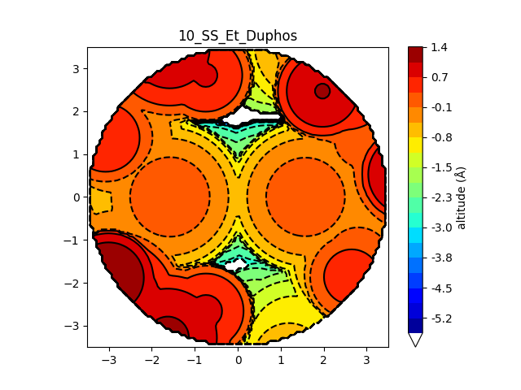

stericMap.py#
usage: stericMap.py [-h] [-o OUTFILE]
[-if {xyz,log,com,gjf,sd,sdf,mol,mol2,out,dat,fchk,crest,xtb,sqmout,47,31,qout}]
[-k KEY] [-t TARGETS] [-c CENTER] [-v {umn,bondi}]
[-r RADIUS] [-oop x_oop y_oop z_oop] [-ip x_ip y_ip z_ip]
[-n NUM_PTS] [-amin MIN] [-amax MAX] [-l LEVELS] [-nl]
[-cmap CMAP] [-p {circle,square}] [-vbur [{Lebedev,MC}]]
[-rp {20,32,64,75,99,127}]
[-ap {110,194,302,590,974,1454,2030,2702,5810}]
[-i ITERATIONS] [-s SCALE]
[input file [input file ...]]
create a steric map for a ligand
positional arguments:
input file a coordinate file
optional arguments:
-h, --help show this help message and exit
-o OUTFILE, --output OUTFILE
output destination
$INFILE will be replaced with the name of the input file
Default: show plot
-if {xyz,log,com,gjf,sd,sdf,mol,mol2,out,dat,fchk,crest,xtb,sqmout,47,31,qout}, --input-format {xyz,log,com,gjf,sd,sdf,mol,mol2,out,dat,fchk,crest,xtb,sqmout,47,31,qout}
file format of input - xyz is assumed if input is stdin
-k KEY, --key-atoms KEY
atoms coordinated to the center
these atoms" ligands will be shown on the map
-t TARGETS, --targets TARGETS
atoms to include in the steric map
default:determine based on key atoms
-c CENTER, --center CENTER
atom the sphere is centered on
Default: detect metal center (centroid of all metals if multiple are present)
-v {umn,bondi}, --vdw-radii {umn,bondi}
VDW radii to use in calculation
umn: main group vdw radii from J. Phys. Chem. A 2009, 113, 19, 5806–5812
(DOI: 10.1021/jp8111556)
transition metals are crystal radii from Batsanov, S.S. Van der Waals
Radii of Elements. Inorganic Materials 37, 871–885 (2001).
(DOI: 10.1023/A:1011625728803)
bondi: radii from J. Phys. Chem. 1964, 68, 3, 441–451 (DOI: 10.1021/j100785a001)
Default: umn
-r RADIUS, --radius RADIUS
radius around center
Default: 3.5 Ångström
-oop x_oop y_oop z_oop, --out-of-plane x_oop y_oop z_oop
list of three numbers defining a vector perpendicular to
the desired steric map
-ip x_ip y_ip z_ip, --in-plane x_ip y_ip z_ip
list of three numbers defining the "y axis" of the steric map
-n NUM_PTS, --number-of-points NUM_PTS
number of points along x and y axes
Default: 100
-amin MIN, --altitude-minimum MIN
manually set the lower cutoff of the altitude map
-amax MAX, --altitude-maximum MAX
manually set the upper cutoff of the altitude map
-l LEVELS, --levels LEVELS
contour levels in the steric map
default: 20
-nl, --no-lines do not add contour lines to the plot
-cmap CMAP, --color-map CMAP
color map name for the contour plot
default: jet
-p {circle,square}, --projection-shape {circle,square}
shape of steric map
note that buried volume values with the square shape are still based
on a sphere around the center
Default: circle
Buried volume options:
-vbur [{Lebedev,MC}], --buried-volume [{Lebedev,MC}]
show buried volume in each quadrant using the specified method
Default: do not include %Vbur
-rp {20,32,64,75,99,127}, --radial-points {20,32,64,75,99,127}
number of radial shells for Lebedev integration
lower values are faster, but at the cost of accuracy
Default: 20
-ap {110,194,302,590,974,1454,2030,2702,5810}, --angular-points {110,194,302,590,974,1454,2030,2702,5810}
number of angular points for Lebedev integration
lower values are faster, but at the cost of accuracy
Default: 1454
-i ITERATIONS, --minimum-iterations ITERATIONS
minimum iterations - each is a batch of 3000 points
MC will continue after this until convergence criteria are met
Default: 25
-s SCALE, --scale SCALE
scale VDW radii by this amount
Default: 1.17
Gallery#
steric map with the default settings
steric map with modified settings (-nl -l 500 -cmap terrain -n 1000 -vbur)
A list of color maps in Matplotlib can be found here. The structures for the gallery images are taken from DOI 10.1021/jacs.2c08513